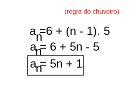

Progressão Aritimética
A Progressão Aritmética (P.A.) é uma sequência de números onde a diferença entre dois termos consecutivos é sempre a mesma. Essa diferença constante é chamada de razão da P.A.
Ex: (1,3,5,7,9...)
Para descobrirmos a razão de uma P.A, basta subtrair o segundo termo pelo primeiro.
ou seja, para acharmos a razão da sequência (1,3,5,7,9...), basta subtrair o segundo termo pelo primeiro.
Veja: 3-1=2
A razão da sequência (1,3,5,7,9...), é (2).
Fórmula do termo geral de uma P.A
A fórmula do termo geral de uma PA é uma expressão usada para encontrar um termo qualquer de uma progressão partindo do primeiro termo e da razão.
Onde,
an: Termo que queremos calcular.
a1: Primeiro termo da P.A.
n: Posição do termo que queremos descobrir.
r: Razão.
Como aplicar a fórmula?
Exemplo:
Calcule o 10° termo da P.A.: (26, 31, 36, 41, ...)
Primeiro, devemos identificar que:
a1 = 26
r = 31 - 26 = 5
n = 10 (10º termo).
Substituindo esses valores na fórmula do termo geral, temos:
an = a1 + (n - 1) . r
a10 = 26 + (10-1) . 5
a10 = 26 + 9 .5
a10 = 71
Lei de formação de uma P.A
Escreva a lei de formação da sequência abaixo:
(6,11,16,21,26...)
Para definirmos a lei de formação, basta substituir pelo termo geral da P.A.
Irá ficar assim:
